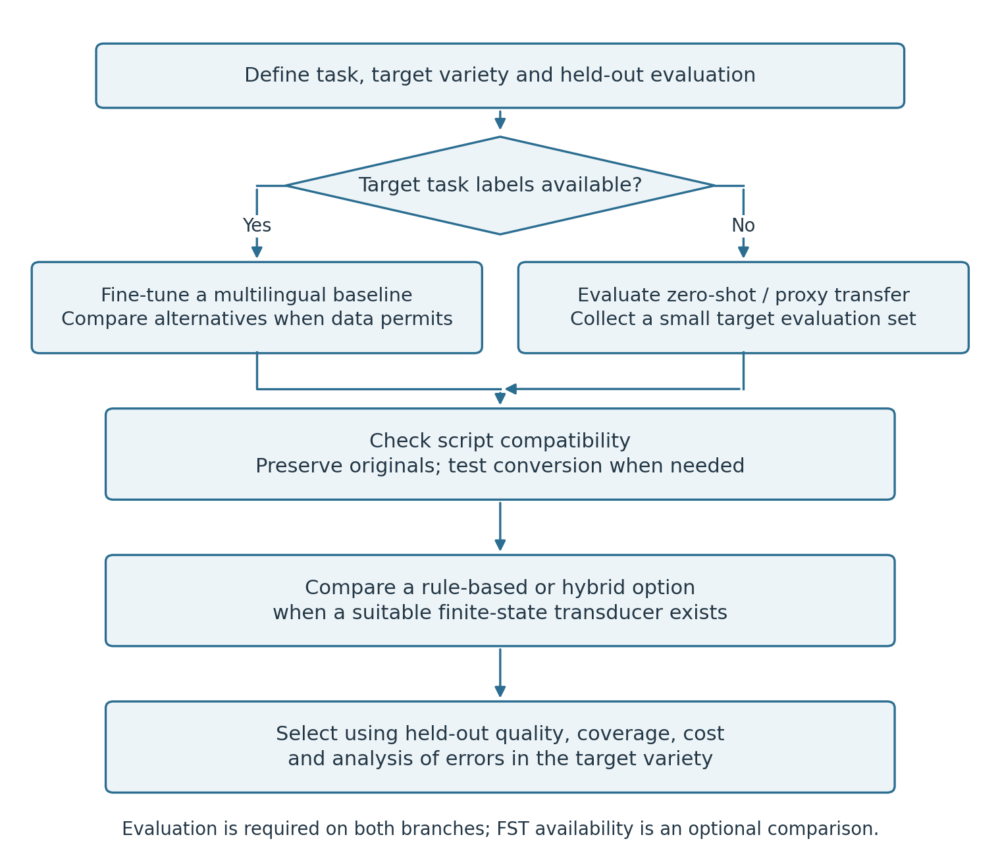

16 Cross-Lingual Transfer within the Turkic Family
After reading this chapter, you will be able to:
- Form testable hypotheses about within-family transfer using morphological and lexical evidence
- Design comparisons that distinguish script, relatedness and resource effects
- Evaluate proxy-language configurations where target task training data are unavailable
- Choose transfer methods to compare using the available target-language evidence
- Explain pooled training and test how temperature sampling changes language exposure
- Compare language-specific adapters with separate models and pooled training
- Distinguish pivot translation, back-translation and synthetic-data filtering
- Recognise the challenges of code-switched Turkic text
Earlier chapters tested transfer in morphology, parsing, NER, translation and speech. Chapter 12 and Chapter 13 also compared native and converted text for classification and retrieval. This chapter brings those methods together: choosing source languages, controlling script conversion, pooling training data and evaluating target-language results.
16.1 Why Related Languages Can Help
16.1.1 Structural and Lexical Hypotheses
Transfer reuses a model trained on one language to make predictions in another. Shared suffix patterns can help a tagger recognise similar grammatical functions; shared words can give an encoder familiar inputs. Multilingual pretraining offers another route: it can place texts from different languages in a shared representation space. A source language is therefore a candidate to test, using the target task and data to judge its usefulness.
The morphology in Chapter 5 suggests which constructions to compare. Written overlap may come from inherited cognates or shared loans, such as kitap/kitab ‘book’. Script conversion changes that overlap. Compare sources on the same target sentences and record script, training size and domain alongside the score (Section 15.1).
16.1.2 Evidence from Tasks
Kardeş-NLU reports benefits from Turkish intermediate training in its evaluated settings (Senel et al. 2024). The parser comparison in Chapter 8 and TurkicASR in Chapter 11 provide further task-specific evidence. The parser table uses matched words and includes very small target samples, especially Sakha; interpret its scores under that evaluation convention.
“Zero-shot” here means applying a model without target task-labelled training. The model may have encountered the target language during multilingual pretraining. A proxy language is a chosen model input or routing configuration. Evaluate that choice on independent target annotations.
16.2 Script Conversion as an Experimental Condition
Script conversion supplies an alternative written input to the same task. The conversion conventions and their losses are explained in Section 3.4 and Section 3.6. Here the question is whether conversion helps transfer: compare it with native text under the model’s documented input conventions. Muller et al. (2021) motivates testing this for unseen scripts.
- Identify the language and script on the original text.
- Record the converter, version and supported direction. Native Latin is not automatically CTS.
- Preserve original strings, whitespace, item IDs and an explicit character-boundary map.
- Run the model, recording any additional automatic script bridging.
- Map predictions back only where the alignment is unambiguous; report failures and coverage.
Digraphs, deletions and context-sensitive mappings can shift character offsets even when word counts stay the same. Rebuilding text with split()/join() can also change its spacing. Preserve a map to the original boundaries; a lossy conversion may have no exact inverse.
16.3 Transfer Strategy by Available Evidence
Available annotation, domain match, model coverage and cost jointly determine which comparisons are feasible. No fixed sentence count marks the point at which a larger model or training from scratch becomes preferable.
| Available evidence | Initial comparisons | What to reserve |
|---|---|---|
| No target task labels | Native multilingual/proxy baseline; optional conversion; existing FST where relevant | Obtain independent target evaluation before claiming quality |
| Small labelled collection | Zero-shot, head/adapter tuning, pooled training | Source-disjoint development and test items |
| Labelled data plus unlabelled text | Continued pretraining vs. task tuning alone | Exclude all evaluation texts from adaptation |
| Larger task data and compute budget | Monolingual vs. multilingual; model-size and scratch-training controls | Same test set and comparable tuning budgets |
Check existing resources before adapting a neighbouring language’s system. Nogai, for example, already has an Apertium module whose lexicon and rules can be extended. For translation, verify NLLB’s supported codes: adding a pivot cannot supply a missing language interface. Use development learning curves to estimate the value of further annotation or parallel data, and reserve separate gold sentences for final evaluation.
16.4 Multilingual Turkic Training
16.4.1 Pooling Data Across Languages
Pool only after checking label conventions, tokenisation and split provenance. Language tags, language embeddings and separate adapters are alternative design choices; none is required by multilingual training. Compare a language-conditioned model with an otherwise matched shared model. A dominant corpus can influence training, but raw language percentages alone do not identify which linguistic mechanism produced a gain.
16.4.2 Evidence from Speech and Parsing
Speech and parsing provide two task-specific comparisons. In speech, the TurkicASR system (Mussakhojayeva et al. 2023) trains a single model jointly on transcribed speech in ten Turkic languages and reports improvements for languages with little data; these results do not isolate the contribution of shared phonetics. In parsing, TurkicNLP’s multilingual parser, trained on twenty UD-format treebanks of ten Turkic languages, is evaluated in the frozen matched-word comparison in Chapter 8. Its gold/silver reference mixture and small samples limit interpretation (Hakimov 2026).
Transfer failures should be analysed by language, domain and task. Report branch and script alongside the results, without treating them as explanations by themselves.
16.4.3 Language-Specific Adapters
State each training stage. One recipe begins with a shared pretrained encoder, optionally updates it on pooled text, then freezes it while training a target adapter and task head. Another trains shared weights and adapters jointly. Compare these as separate experiments. Distinguish bottleneck adapters from LoRA and report the modules trained, parameter counts and measured inference overhead.
Freezing shared weights prevents those weights from being overwritten during that stage, but does not guarantee preservation of end-to-end predictions: adapters and heads change outputs. Save all trained components and check reload equivalence.
16.4.4 Addressing Data Imbalance
Temperature sampling chooses language \(i\) with probability
\[p_i=\frac{n_i^{1/T}}{\sum_j n_j^{1/T}}.\]
With a synthetic 9:1 corpus-size ratio, \(T=1\) samples 90%/10% and \(T=2\) samples 75%/25%. The figures are illustrative arithmetic. In an actual run, track examples and updates per language. Choosing one language per batch controls exposure across steps; mixing all languages into every batch needs a compatible batch design. Select temperature on development data and check both smaller and larger languages.
16.5 Pivot Translation as Data Augmentation
A pivot translates source→pivot→target when both component directions are supported. Verify the actual released pair/model and script for each leg; a development repository is evidence neither of released coverage nor of translation quality. Compare direct translation, pivoting and any synthetic-data adaptation on the same independent target test set (Chapter 10).
Evaluate the complete source→pivot→target output. Scores for the two legs cannot simply be combined: the second model may preserve, introduce or repair errors.
Back-translation uses a target→source system to pair real target sentences with synthetic source text. Document filtering and keep source-document groups intact across splits. Check the real text too. Round-trip consistency can reward copying or repeatable mistakes, so combine it with language checks, alignment diagnostics and independent human review.
Compare filtered data with random subsets of equal size. Exercise 4 measures reference overlap on such subsets without training on them. To test their value for adaptation, generate separate training data and reserve the benchmark test set for final evaluation.

16.6 Code-Switched and Mixed Text
Distinguish an established borrowing from an active switch between languages, and state the annotation convention for ambiguous cases. A shared script cannot identify language boundaries. Preserve mixed-language segments and evaluate token-level language labels, task labels and segment boundaries separately. Turkish–German SAGT and Turkish–English BUTR resources must be named according to the exact released treebank; consult the official inventory in Chapter 8 rather than treating every Turkish treebank as monolingual.
Inserting words synthetically perturbs the input. Natural code-switching may look quite different. Have proficient speakers check naturalness and preservation of the task label, and report real mixed-language evaluation separately.
16.7 Hands-On: Comparing Native Text and Script Conversion
Question. Does consistent script conversion change Kazakh-to-Kyrgyz NER?
Inputs. Source training and independent target annotations, converter metadata and a declared entity schema.
Compute. The Exercise 1 CRF runs on CPU; the full protocol also needs original character offsets.
Output. Span scores by script condition and a mapping-failure report.
Interpretation. Compare matched conditions and keep token-level results distinct from original-offset validation.
Use a source-trained model and independently annotated target sentences with immutable IDs and original character spans. Keep source training data and target development/test groups disjoint. Harmonise entity schemas before scoring: map PERSON/PER to PER, ORGANIZATION/ORG to ORG, and GPE/LOCATION/LOC to LOC; excluded types become O under this explicitly reduced task.
The tested helpers in transfer.py reconstruct BIO spans from original offsets, reject orphan I tags, and map converted spans through unique stable character boundaries. A span cutting a digraph or ambiguous deleted unit is rejected and counted, not silently moved. The conservative prefix-probing converter is intended for short diagnostics and is quadratic in text length.
from transfer import conversion_map, restore_span # code/ch16-transfer on PYTHONPATH
from turkicnlp.scripts import Script
from turkicnlp.scripts.transliterator import Transliterator
converter = Transliterator("kir", Script.CYRILLIC, Script.COMMON_TURKIC)
original = "Бишкекте жыйын өттү."
converted, boundaries = conversion_map(original, converter.transliterate)
# For each model-predicted (start, end, type) span in converted text:
# original_span = restore_span(predicted_span, boundaries)Log the checkpoint, converter and processor trace. If the pipeline automatically bridges the input to a different model script, the nominal native/CTS labels do not describe the actual model inputs; inspect those inputs before comparing results. Score strict entity spans on the same original gold annotations, with mapping failures included in the coverage report.
To investigate genealogy, add related and unrelated source languages under comparable training sizes and tuning budgets. A descriptive regression across a few dependent language pairs cannot isolate a causal script effect. Use paired item-level comparisons, multiple seeds and an independently collected set in addition to potentially exposed parallel benchmarks.
Exercise 1 compares token-aligned versions of Kazakh→Kyrgyz NER. A CRF with the Chapter 9 features is trained on 20,000 KazNERD training sentences and evaluated on 3,867 KyrgyzNER test sentences. The reduced schema also maps KyrgyzNER’s INSTITUTION and BUSINESS types to ORG, as in Chapter 9. Native Cyrillic gives span F1 31.9; converting both sides to the toolkit’s Common Turkic Script (CTS) gives 34.6. Training on native text and testing on CTS gives 6.9. This single-sample comparison describes one feature set; uncertainty across training samples remains unmeasured (Section 15.1).
Word-by-word conversion preserves token indices, so the exercise scores token-level entity boundaries. It does not restore predictions to the source’s original character offsets. Its span parser ignores orphan I tags.
A separate diagnostic uses the stricter bio_spans helper, which rejects one sentence. It restores 3,090 gold spans and fails on one. However, it reconstructs sentences with spaces, so those offsets belong to reconstructed text. The full Hands-On requires original offsets and an explicit policy for malformed BIO sequences.
Status: completed. Exercise 1 records the token-aligned comparison: strict entity-span F1 is 31.9 native/native and 34.6 CTS/CTS. The original-character-offset protocol remains a procedure; its mapping diagnostic is described above.
What to Take Forward
Transfer reuses supervision, representations or tools across languages, and each method changes a different part of the system. The Kazakh–Kyrgyz NER comparison shows how much the input convention matters: matching scripts on both sides gave span F1 31.9 (native) and 34.6 (CTS), while a native-trained model tested on converted text fell to 6.9. Choose candidate sources from linguistic and resource evidence, keep the input conditions explicit, and decide on target-language scores with a budget for annotation and review. Chapter 17 asks what to build when target data are scarce and the community decides.
Further Reading
Kardeş-NLU (Senel et al. 2024) studies sentence-level transfer to Turkic languages with Turkish as a high-resource relative. Hakimov (2026) measures transfer of morphology and parsing through proxy languages, and the effect of a common script on tokenisation and lexical overlap. For choosing transfer languages in general, see Lin et al. (2019).
For multilingual training methodology, the TurkicASR paper (Mussakhojayeva et al. 2023) provides a case study of Turkic multilingual pooling, with experiments comparing combinations of training languages. For text, Hakimov (2026) evaluates multilingual Turkic morphology and parsing with proxy languages and temperature sampling, and Muller et al. (2021) studies transliteration as a way to help multilingual models with unseen scripts.
Conneau et al. (2020) introduces XLM-R and reports multilingual transfer experiments. For translation, NLLB Team et al. (2024) discusses low-resource training, back-translation and filtering. The TIL corpus (Mirzakhalov, Babu, Ataman, et al. 2021) supplies parallel data; a separate multiway study reports multilingual experiments (Mirzakhalov, Babu, Kunafin, et al. 2021).
Forcada et al. (2011) and Khanna et al. (2021) describe Apertium. The Kazakh and Kyrgyz FST papers (Washington, Salimzyanov, and Tyers 2014; Washington, Ipasov, and Tyers 2012) give examples of rule-based morphology that can be extended or combined with other methods.
Exercises
- Compare native/native, converted/converted and native/converted conditions using declared converter directions. Record failed mappings and actual model input scripts.
- Compare related and unrelated source training at matched data and compute budgets. Keep target test data out of proxy and hyperparameter selection.
- Test temperature sampling on an imbalanced multilingual training set and report effective exposure and per-language development scores.
- Compare unfiltered, quality-filtered and randomly reduced synthetic parallel data at the same retained size, scoring each retained set against real target references and checking what the filter selects for.
- Evaluate real code-switched text separately from synthetic perturbations, with borrowing conventions and label-preservation checks.